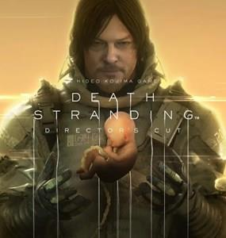

Death Stranding, Kojima Productions tarafından geliştirilen ve Sony Interactive Entertainment tarafından PlayStation 4 oyun konsolu için 8 Kasım 2019 tarihinde yayınlanan, Microsoft Windows platformunda ise 14 Temmuz 2020 tarihinde yayınlanan video oyunudur.
Death Stranding, Kojima Productions tarafından geliştirilen ve Sony Interactive Entertainment tarafından PlayStation 4 oyun konsolu için 8 Kasım 2019 tarihinde yayınlanan, Microsoft Windows platformunda ise 14 Temmuz 2020 tarihinde yayınlanan video oyunudur.
Sözleşmesinin sona ermesinin ardından 2015 yılında Konami'den ayrılan Hideo Kojima ve şirketinin yapmış olduğu ilk oyundur. Amerikalı aktör Norman Reedus oyundaki ana karakteri canlandırıp seslendirmiştir. Oyun ilk defa Haziran 2016'da Sony'nin düzenlediği E3 2016 konferansında duyuruldu. Eylül 2016'da Kojima, oyunun 2019 yılından önce yayınlanacağını belirtti.

Hideo Kojima oyunun aksiyon türüne benzer bir türde olduğunu fakat yeni ve değişik elementleri içerdiğini belirtti. Oyunun ana temalarından bazılarının Kōbō Abe'in kısa hikâyelerinden esinlenerek oluştuğunu açıkladı. Bu oyun Kojima ve aktör Norman Reedus'ın ikinci çalışmasıdır, ilki 2015'te iptal edilen Silent Hills'dir. Kojima'ya göre oyun fragmanının kilit unsurlarından biri yaşam ve ölümün bağlantısı fikridir. Fragmanda ayrıca kıyıya vurmuş ölü canlılar teması ve görselleri hakimdir. 1 Aralık 2016 tarihinde düzenlenen 2016 The Game Ödülleri'nde yayınlanan fragmanda Mads Mikkelsen'in oyunda yer aldığı, daha önceden Kojima ve Reedus ile birlikte Silent Hills projesinde yer almış film yönetmeni Guillermo del Toro'nun da oyunda küçük bir role sahip olduğu açıklandı.
Oyunun PC versiyonunun olma olasılığı konusu ilk kez Aralık 2015'te Medium'un yayınladığı Soru&Cevap oturumunda bahsedildi ve Kasım 2019'da Windows'ta yayınlanacağı kesinleşti.
x